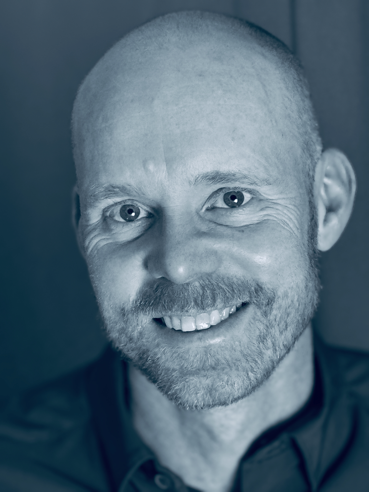

Från komplexitet till klarhet.
Jag hjälper organisationer och individer att fatta bättre beslut, skapa struktur i komplexitet och utveckla hållbara resultat genom analys, forskning, ekonomisk förståelse och strategiskt ledarskap.
Kontakta mig
Vetenskaplig analys med strategisk och praktisk förståelse.
Forskning & analys
Professor i beräkningsbaserad genomik med internationellt ledande forskning inom statistisk modellering, AI och komplex dataanalys.
Läs mer →
Ekonomi & redovisning
YH-utbildad redovisningsekonom med praktisk förståelse för bokföring, ekonomistyrning, beskattning och verksamhetsanalys.
Läs mer →
Ledarskap & utveckling
Erfarenhet av att utveckla människor och prestation i miljöer med höga krav på långsiktighet, struktur och kontinuerlig förbättring.
Läs mer →
Strategiskt beslutsstöd
Förmåga att omsätta komplex analys till tydliga strategier, praktiska åtgärder och hållbara resultat.
Läs mer →
Akademisk bakgrund
- Professor i Beräkningsbaserad Genomik
- Uppsala universitet & SLU
- Internationell forskning inom AI & dataanalys
- Publikationer i Nature Genetics, PNAS m.fl.
- H-index 43 (Google Scholar)
Ekonomisk kompetens
- Redovisningsekonom (YH)
- Bokföring & bokslut
- Ekonomistyrning & rapportering
- Beskattning & moms
- Praktisk verksamhetsförståelse
Ledarskap & utveckling
- Lång erfarenhet av coachning och mentorskap
- Utveckling av individer och team över tid
- Prestationsmiljöer med höga krav
- Strategi, progression och hållbar utveckling
- Erfarenhet från både forskning och idrott
Internationellt etablerad forskning inom komplex analys.
Forskningsprofil
Tidigare professor i Beräkningsbaserad Genomik vid Uppsala universitet och professor i Computational Genetics vid SLU.
Specialisering
Forskning inom statistisk modellering, genetiska interaktioner, högdimensionell dataanalys och AI-relaterade analysmetoder.
Internationell publicering
Publikationer i bland annat Nature Genetics, Nature Reviews Genetics, PNAS, Trends in Genetics och PLoS Genetics.
Ekonomisk förståelse med analytisk grund.
Redovisning
Utbildning inom löpande bokföring, bokslut, moms, ekonomistyrning och praktisk redovisning.
Verksamhetsförståelse
Kombinationen av ekonomisk förståelse och avancerad analys ger stöd för strategiska och datadrivna beslut.
Analytiskt perspektiv
Erfarenhet av att arbeta strukturerat med komplex information, modellering och beslutsunderlag.
Utveckling av människor, prestation och långsiktig progression.
Mentorskap
Mångårig erfarenhet av handledning, coachning och utveckling av individer i prestationsmiljöer.
Forskningsledning
Ledde forskningsgrupper och internationella projekt med ansvar för strategi, utveckling och finansiering.
Prestationsmiljöer
Erfarenheter från både akademi och idrott har gett ett starkt perspektiv på hållbar hög prestation över tid.
Analys och rådgivning för komplexa miljöer.
AI & dataanalys
Erfarenhet av avancerad modellering, mönsteridentifiering och analys av komplexa datasystem.
Strategisk analys
Hjälper organisationer att skapa struktur, förstå komplexitet och fatta bättre beslut.
Tvärvetenskapligt perspektiv
Kombinationen av forskning, ekonomi och ledarskap möjliggör bred analysförmåga och praktiskt orienterad rådgivning.
Låt oss skapa värde tillsammans.
Jag arbetar i gränslandet mellan analys, strategi, ekonomi och avancerad problemlösning — med fokus på att skapa tydlighet och hållbara resultat i komplexa miljöer.
Kontakta mig